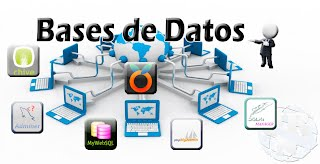

PROGRAMACION DE SOFTWARE
Software de programacion: se trata de un conjunto de herramientas y utilidades que permiten a los programadores desarrollar programas informaticos utilizando diferentes lenguajes de programacion o bases de datos. Incluye de manera general: editores de texto (sublime), compiladores (java), interpretes (Php, JavaScript), enlazadores y de puradores (My Sql). Para comprender la programacion es necesario desarrollar algoritmos y estructurarlos a traves de diagramas de flujo.
Para complementar
Software
ALGORITMO
Se puede entender un algoritmo como una secuencia de pasos finitos bien definidos que resuelven un problema. Por ejemplo, la ejecución de tareas cotidianas tan simples como cepillarse los dientes, lavarse las manos o seguir el manual de instrucciones de armado de un mueble, se pueden ver como un algoritmo.
Php
PHP son las siglas en inglés del acrónimo Hypertext Pre-Processor, es decir, pre-procesador de hipertexto. Es un lenguaje de programación de propósito general que se ejecuta en el lado del servidor. Es un lenguaje interpretado, está enfocado principalmente a la programación de scripts del lado del servidor, por lo que se puede hacer cualquier cosa que pueda hacer otro programa CGI, como recopilar datos de formularios, generar páginas con contenidos dinámicos, o enviar y recibir cookies.
JavaScript
JavaScript es un lenguaje de programación que los desarrolladores utilizan para hacer páginas web interactivas. Desde actualizar fuentes de redes sociales a mostrar animaciones y mapas interactivos, las funciones de JavaScript pueden mejorar la experiencia del usuario de un sitio web.
Bases de Datos

Una base de datos es una recopilación organizada de información o datos estructurados, que normalmente se almacena de forma electrónica en un sistema informático. Normalmente, una base de datos está controlada por un sistema de gestión de bases de datos (DBMS).